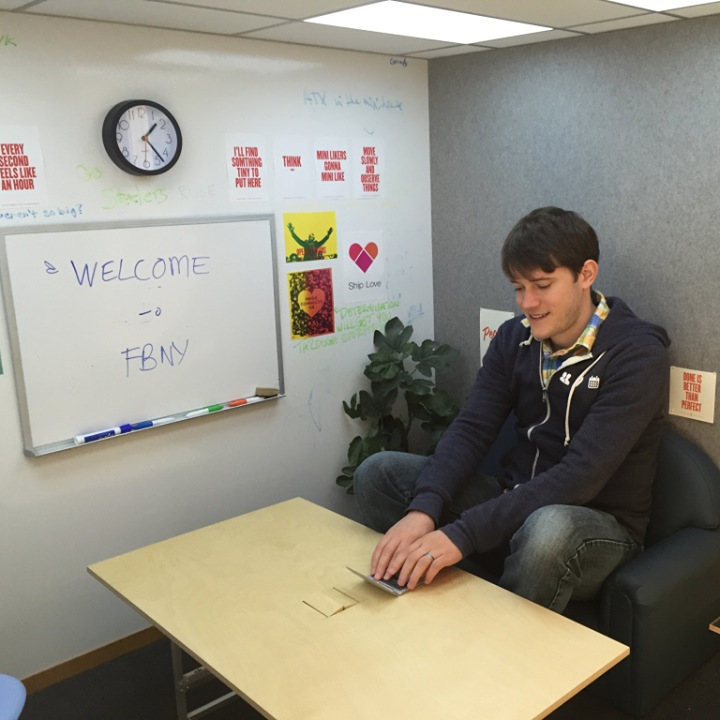
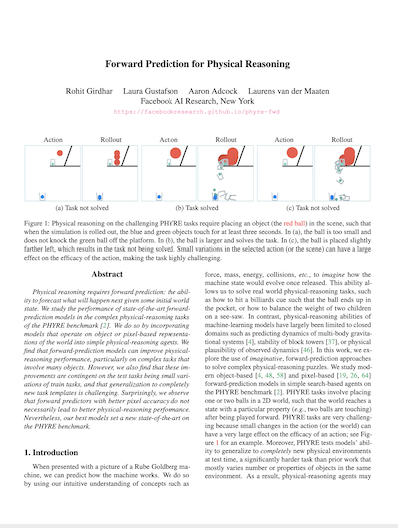

Forward Prediction for Physical Reasoning
| Physical reasoning requires forward prediction: the ability to forecast what will happen next given some initial world state. We study the performance of state-ofthe-art forward-prediction models in complex physical-reasoning tasks. We do so by incorporating models that operate on object or pixel-based representations of the world, into simple physical-reasoning agents. We find that forward-prediction models improve the performance of physical-reasoning agents, particularly on complex tasks that involve many objects. However, we also find that these improvements are contingent on the training tasks being similar to the test tasks, and that generalization to different tasks is more challenging. Surprisingly, we observe that forward predictors with better pixel accuracy do not necessarily lead to better physical-reasoning performance. Nevertheless, our best models set a new state-of-the-art on the PHYRE benchmark for physical reasoning. |
People
 Rohit Girdhar |
 Laura Gustafson |
 Aaron Adcock |
 Laurens van der Maaten |
Paper
|  |
R. Girdhar, L. Gustafson, A. Adcock and L. van der Maaten Forward Prediction for Physical Reasoning Time Series Workshop, ICML 2021 [arXiv] [code/models] [BibTex] |
Acknowledgements
The authors thank Rob Fergus, Denis Yarats, Brandon Amos, Ishan Misra, Eltayeb Ahmed, Anton Bakhtin and the entire Facebook AI Research team for many helpful discussions.